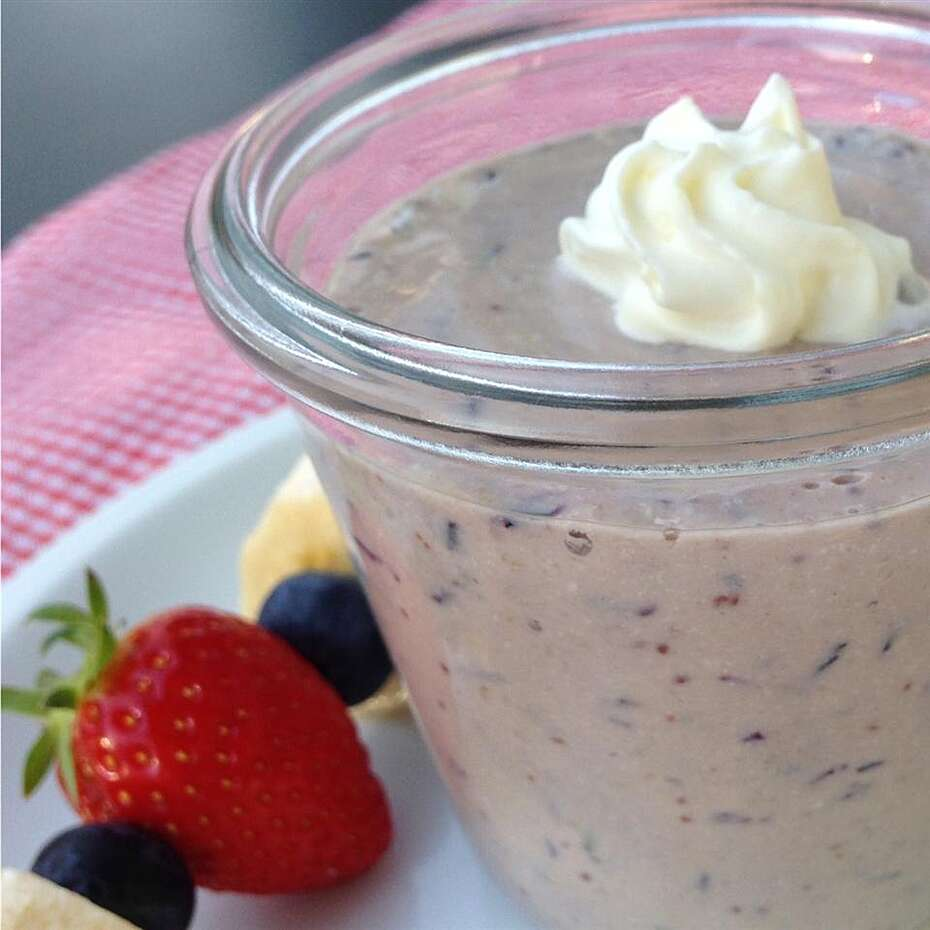

Breakfast Smoothie

Description
An easy, fast, high-fiber, and high-protein
breakfast or anytime smoothie. Choosing your
fruits, yogurt, and protein powder flavors
will make this your personal customized recipe.
This smoothie will keep you going until lunch time!
Ingredients
- 1/2 cup mixed frozen berries
- 1/4 cup Greek yogurt
- 1/4 cup steel-cut oats
- 1/4 cup water
- 1 scoop protein powder
- 1 teaspoon honey, or to taste
Directions
- blend berries
- add yogurt, oats, protein powder
- finally after adding honey blend until smooth